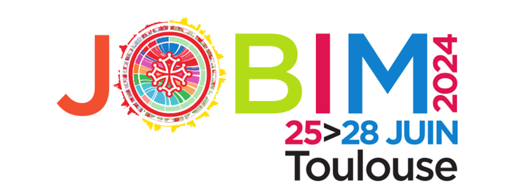
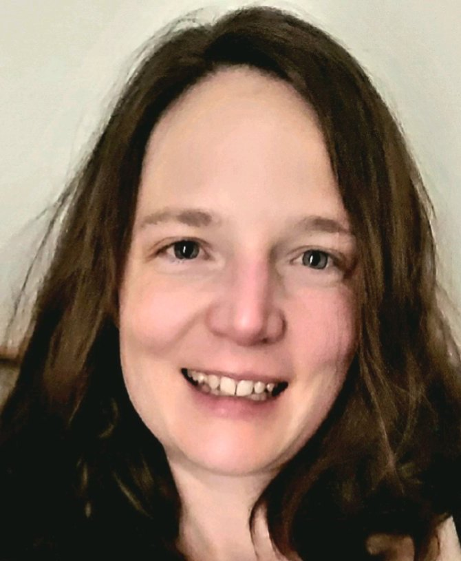
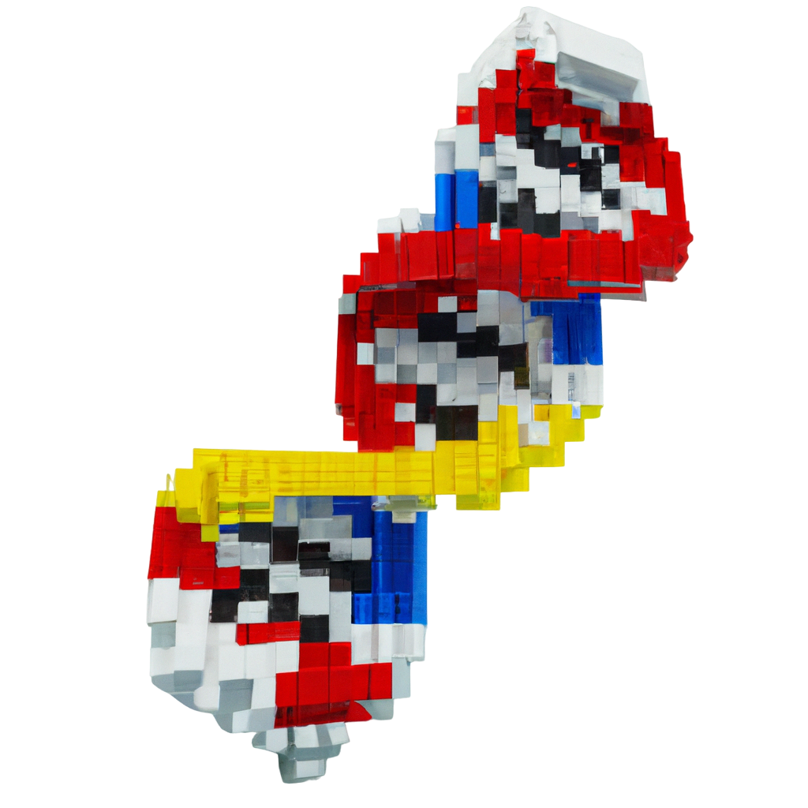

 Ce mini-symposium se tiendra dans le cadre de la conférence JOBIM 2024. Il est co-organisé avec le GT LEGO, et soutenu par le GDR BIMMM et l’IUF.
Résumé
Actuellement, une initiative mondiale est en cours pour séquencer la biodiversité de la Terre, produisant des volumes de données génomiques et métagénomiques sans précédent. Dans ce symposium, notre objectif est d’explorer les récentes avancées méthodologiques en matière d’apprentissage automatique et de statistiques pour exploiter ces données. L’accent sera mis sur l’amélioration de notre compréhension de la relation génotype-phénotype et du rôle du microbiote dans la santé et les maladies humaines. Nous aborderons différents défis (variabilité inter et intra-population/espèces, intégration de données omiques compositionnelles) et nous nous pencherons sur le potentiel et les limites des grands modèles de langage pour les séquences biologiques.
Summary
Currently, a global initiative is underway to sequence the Earth’s biodiversity, producing unprecedented volumes of genomic and metagenomic data. In this symposium, we aim to explore recent methodological advances in machine learning and statistics to exploit this data. The focus will be on improving our understanding of the genotype-phenotype relationship and the role of microbiota in human health and disease. We will address various challenges (inter- and intra-population/species variability, integration of compositional omics data) and look at the potential and limitations of large language models for biological sequences.
Programme
- 16h30-17h
Mafalda Dias, Group Leader, Centre for Genomic Regulation, Espagne
Modelling the genetic variation across the tree of life to learn about human disease
The genetic variation observed across the tree of life is the result of millions of years of evolutionary experiments and should therefore contain valuable information to link genotype to molecular function and ultimately to the genetic architecture of disease. Deep generative modelling is a powerful approach for describing the rich distribution of observed variation, and revealing the patterns of constraint in sequence space that must be preserved in order to maintain fitness. In this talk I will describe our recent progress in developing models to aid in genetic diagnosis and disease gene discovery. We propose a model which places variants on a proteome-wide scale of pathogenicity and show that in contrast to previous models, this now enables us to identify causal variants from whole exome data in rare disease patients. Using this model, we find evidence for over 100 novel genetic disorders.
- 17h-17h30
Jean-Daniel Zucker, DR, Sorbonne Université – IRD, France
Challenges of Learning Embeddings from (Raw) Metagenomics Data
The field of metagenomics offers a panoramic view of microbial communities’ genetic material, presenting both opportunities and challenges for computational biology. A primary hurdle in leveraging this data is the development of robust, informative embeddings that can capture the complex, high-dimensional relationships inherent in metagenomic samples. This is one of the objectives of the DeepIntegrOmics ANR project. Traditional machine learning approaches often struggle with the multiple-instance nature of metagenomic data, leading to embeddings that incompletely represent the underlying biological phenomena. This talk will discuss existing embeddings of Metagenomics data and explore how meta-learning can be an approach to the problem of finding good embeddings.
- 17h30-18h
Baptiste Ruiz, Doctorant, Université de Rennes – Inria – CNRS, France
SPARTA: a knowledge integration-based pipeline for disease state classification through the robust selection of inter-associated OTUs and functions
The field of personalized medicine has major stakes in using an individual’s microbiota as a descriptor of health. This raises the question of the interpretability of microbiotal signatures found for various diseases. To gain insight on this matter, we developed the SPARTA (Shifting Paradigms to Annotation Representation from Taxonomy to identify Archetypes) pipeline to highlight and interlink significantly discriminating Operational Taxonomic Units (OTUs) and metabolic functions. SPARTA relies on the integration of the information from the UniProt database concerning the gut microbiota’s functional annotation to OTU abundance data, and on Machine Learning classification. Iteration of this method can shrink the list of the microbiotas’ descriptors tenfold, both in terms of OTUs and metabolic functions. It also reveals that the shift to functional profiles comes at no significant cost to overall classification performance. Finally, we highlight how discriminant metabolic functions may arise from the aggregation of several low-abundance OTUs, giving visibility to these functions which are therefore not easily derivable from OTU-based approaches, marking them as potentially novel leads.
- 18h-18h30
 M. Berland, Resp. Opé. InfoBioStat, MetaGenoPolis, INRAE, Jouy-en-Josas, France
Machine Learning for microbiome data: from network thinking to model predictions
The human gut microbiota, a complex community of microorganisms in the gastrointestinal tract, is pivotal to various aspects of human health, influencing metabolism, immune function, and even behavior. The ecological complexity of the gut microbiota is characterized by diverse microbial species interacting with each other, and network inference has emerged as a powerful unsupervised learning approach to decipher the intricate relationships within microbial communities. By representing microbial species as nodes and their interactions as edges, networks can identify microbial guilds—groups of co-occurring species that share functional traits or environmental niches. These models facilitate the exploration of community structure, revealing keystone species and critical interaction patterns that underpin ecosystem stability. On the other hand, supervised machine learning models, such as random forests, excel in handling complex and high-dimensional data, capturing intricate microbial patterns indicative of health or disease states while providing robust feature importance metrics. However, microbiome data present unique statistical challenges and many aspects can impact the performance of the models. This talk will review the state of the art, new methods, and open challenges in the field of (un)supervised machine learning for microbiome data, fostering the development of diagnostic tools and personalized recommendations.
Une version .pdf du programme est disponible ici.
Informations pratiques
Le mini-symposium aura lieu sur le site de la conférence JOBIM 2024.
Sponsors
